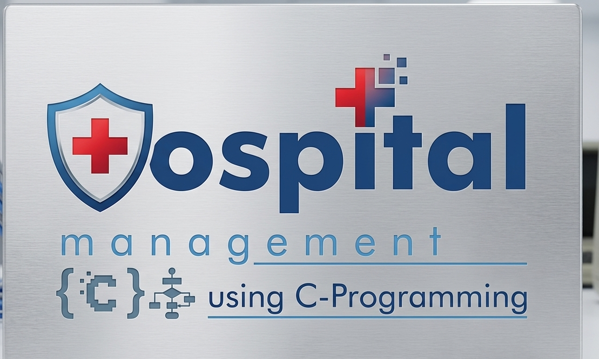

My Projects
These are few of my projects that I have built over time. They showcase my skills in web development, programming, and problem-solving. Each project is a testament to my dedication to learning and improving as a developer. Visit my github repository to explore more of my work and contributions to the open-source community.
 Web Dev
Web Dev
CRUD Operations App
Full-stack web app for Create, Read, Update and Delete operations. Data persists in a MySQL database via phpMyAdmin, with a PHP backend and a dynamic JavaScript front-end.
 Web Dev
Web Dev
Simple Website
A fully hand-coded multi-section website built without any framework. Demonstrates semantic HTML, responsive CSS layouts, and vanilla JS interactivity, all written from scratch.

Web DevHospital Management System
Console-based hospital management tool written in C. Handles patient records, doctor scheduling and billing , showcasing file I/O, linked lists and structured data management.
C Programming Repository
A growing collection of C programs covering algorithms, data structures, string handling and memory management , a solid reference for foundational low-level programming.
Finger Gesture Control
Real-time hand-tracking system using OpenCV and MediaPipe. Reads finger gestures from a webcam and maps them to system controls bridging computer vision and human-computer interaction : Built with the help of Claude
Recreate Pages
A practice repository of recreated real-world web pages, built pixel-by-pixel from scratch to sharpen layout precision, responsive structuring and attention to design detail.
Learning Python
A hands-on collection of Python exercises and mini-projects written while learning the language covering core syntax, functions, file handling and basic problem-solving.
Open Source
More Projects on GitHub
All source code is publicly available. Browse the full commit history, branches and issues or fork whatever you find useful.